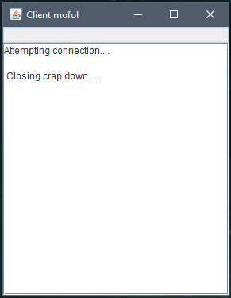
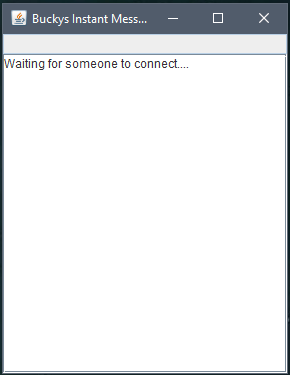

Server Client Chat Application with Java Socket Programming
Chat Application establishes a connection between 2 or more systems connected over an internet or ad-hoc. This tool can be used for large scale communication and conferencing in an organization or campus of vast size, thus increasing the standard of co-operation. In addition it converts the campus concept of sockets to a user friendly environment.This software can have further potentials such as file transfer and voice chatting options that can be worked upon later.
Usually, the server runs on a specific computer and has a socket that is bound to a specific port number. The server is just waiting, listening for a socket for a client to make a connection request.
On the client side: the client knows the hostname of the server machine that is running and the port number on which the server is listening. To make a connection request, the client tries to meet with the server on the server and port machine. The client also needs to identify himself to the server so that it binds to the local port number that will be used during this connection. This is usually given by the system.
If all goes well, the server accepts the connection. Once received, the server gets a new socket bound to the same local port and also has an endpoint that is set to the address and port of the client. A new socket is required so that it can continue to listen for socket connection requests while taking care of the needs of the connected client.
On the client side, if a connection is accepted, the socket is successfully made and the client can use the socket to communicate with the server. Clients and servers can communicate by writing or reading from the socket.
Explanation
The following is the source code, explanation and results of the execution of this application. server.java On the server, first opening port 9999 and waiting for the connection.
Client.java

You have to drag and drop these controls – TextArea, TextField, Button and Label. TextArea is used to view the incoming messages and TextField is used to write the message.
Server.java

Now that the coding part is there. Open client.java and Server.java. Enter the code part.
Client.java
ClientTest.java
Server.java
ServerTest.java
Output

I hope you like it. Please reach me out over LinkedIn for any query. Thanks for reading!!!